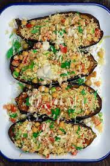

Mama's Stuffed Eggplant

Before you make
This recipe is the type of recipe to leave anyone who eats it in complete awe,
and begging for a plate to take home with them! Mama's Stuffed Eggplant is able to serve up to 4 people
and takes about an hour and a half to make with roughly 30 minutes of prep time before hand. Cost of time aside
this dish is absoultely worth the lengthy wait considering how good and even how HEALTHY this dish is!
Ingredients
- 1 large eggplant
- 3 tbsp extra-virgin olive oil
- 1/2 tsp grey sea salt
- 1/4 tsp black pepper
- 1/2 pound ground beef
- 1 onion(diced)
- 1 red bell pepper(diced)
- 3 cloves garlic(finely chopped)
- 1/2 cup chopped fresh parsley
- 1/2 cup chopped fresh basil leaves
- 1 1/4 cups grated Pecorino Romano Cheese
- 1 whole egg
- 2 small tomatoes(chopped)
Directions
- Heat oven to 350 degrees F
- Cut the eggplant in half and scoop out the center, leaving enough meat inside the skin so that it holds its shape when baked. Chop eggplant that has been scooped out of the inside; place in saucepan, cover with water and boil until very soft, 10 to 12 minutes.
- Meanwhile, in a medium satue pan, heat 1 tbsp of the olive oil over medium heat. Salt and pepper the beef. Add the seasoned ground beef to the pan, and sute until all of its liquid is evaporated and the beef begins to brown slightly. Let it cool briefly, and chop the cooked beef so that there are no large chunks of meat. In another medium saute pan over meduim heat, add the remaining 2 tbsp olive oil, and saute the onion, pepper, and garlic together in the oil
- In a bowl, mix together the cooked eggplant, vegetables, beef, herbs, 1 cup of the cheese, 1/4 cup of the bread crumbs and the egg. Fill the scooped-out eggplant halves with this mixture, dividing it evenly between the two halves.
- Top with chopped tomatoes, the remaining 1/4 cup cheese, remaining 1/4 cup bread crumbs, and season with salt and pepper. Place on oiled oven tray or baking dish, and bake for 50 minutes. Let cool briefly; slice widthwise and serve.